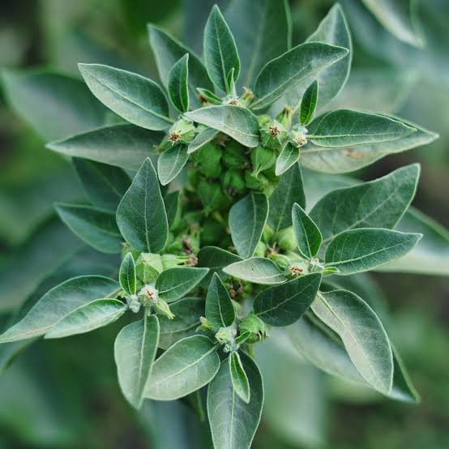
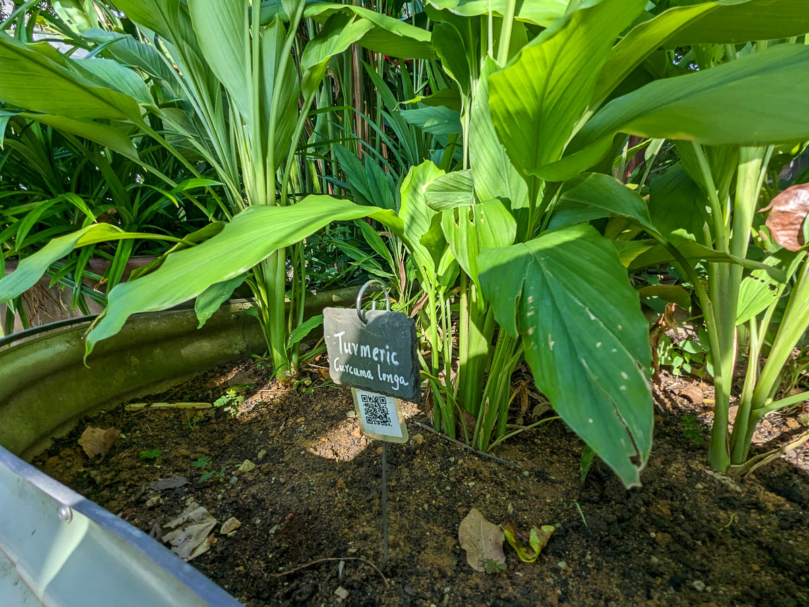
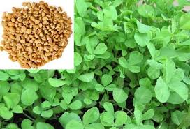
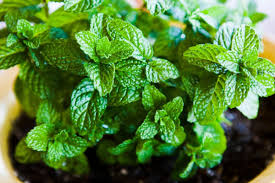
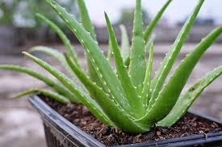

Find a Plant
Tulsi (Ocimum sanctum)
Common Names: Holy Basil, Sacred Basil
Medicinal Uses: Known for its anti-inflammatory, anti-viral, and antioxidant properties. Excellent for boosting immunity and reducing stress.
Ashwagandha (Withania somnifera)
Common Names: Indian Ginseng, Winter Cherry
Medicinal Uses: A powerful adaptogen that helps the body manage stress. It also boosts brain function and fights symptoms of anxiety.

Turmeric (Curcuma longa)
Common Names: Haldi, Indian Saffron
Medicinal Uses: Contains curcumin, a substance with powerful anti-inflammatory and antioxidant properties. Widely used for joint health.

Cinnamon (Cinnamomum verum)
Common Names: Ceylon Cinnamon, True Cinnamon
Medicinal Uses: Loaded with antioxidants, it has anti-inflammatory effects and helps regulate blood sugar levels, making it beneficial for metabolic health.
Cardamom (Elettaria cardamomum)
Common Names: True Cardamom
Medicinal Uses: Known for its ability to soothe digestive issues. It also has diuretic properties and may help lower blood pressure.
Clove (Syzygium aromaticum)
Common Names: Clove Buds
Medicinal Uses: High in antioxidants and has antimicrobial properties. Often used in dental care for its pain-relieving effects.
Brahmi (Bacopa monnieri)
Common Names: Water hyssop, Herb of grace
Medicinal Uses: Renowned as a memory enhancer and cognitive booster. It helps reduce anxiety and stress by regulating cortisol levels.
Giloy (Tinospora cordifolia)
Common Names: Guduchi, Amrita, Heart-leaved moonseed
Medicinal Uses: A powerful immunity booster with anti-pyretic properties, making it effective in fighting fevers like dengue and swine flu.
Hibiscus (Hibiscus rosa-sinensis)
Common Names: Shoeblackplant, China rose
Medicinal Uses: Rich in antioxidants and vitamin C. Often used in teas to lower blood pressure and promote hair growth and health.
Methi (Trigonella foenum-graecum)
Common Names: Fenugreek
Medicinal Uses: Helps control blood sugar levels, aids in digestion and weight loss, and is known to boost milk production in nursing mothers.

Mint (Mentha spicata)
Common Names: Pudina, Spearmint
Medicinal Uses: Widely used to soothe indigestion and upset stomachs. Its strong aroma helps relieve headaches and clears nasal congestion.

Neem (Azadirachta indica)
Common Names: Indian lilac
Medicinal Uses: Possesses powerful antibacterial, antifungal, and antiviral properties. Widely used for skin conditions and dental care.
Aloe Vera (Aloe vera)
Common Names: Ghritkumari
Medicinal Uses: The gel is famous for soothing sunburns and healing skin wounds. Its juice can aid digestion and relieve constipation.
